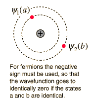
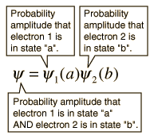
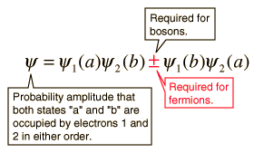

Pauli Exclusion Principle
No two electrons in an atom can have identical quantum numbers. This is an example of a general principle which applies not only to electrons but also to other particles of half-integer spin (fermions). It does not apply to particles of integer spin (bosons).

|
The nature of the Pauli exclusion principle can be illustrated by supposing that electrons 1 and 2 are in states a and b respectively. The wavefunction for the two electron system would be

but this wavefunction is unacceptable because the electrons are identical and indistinguishable. To account for this
we must use a linear combination of the two possibilities since the determination of which electron is in which state is not possible to determine.
|
The wavefunction for the state in which both states "a" and "b" are occupied by the electrons can be written

The Pauli exclusion principle is part of one of our most basic observations of nature: particles of half-integer spin must have antisymmetric wavefunctions, and particles of integer spin must have symmetric wavefunctions. The minus sign in the above relationship forces the wavefunction to vanish identically if both states are "a" or "b", implying that it is impossible for both electrons to occupy the same state.
|
Index
Atomic Structure Concepts |